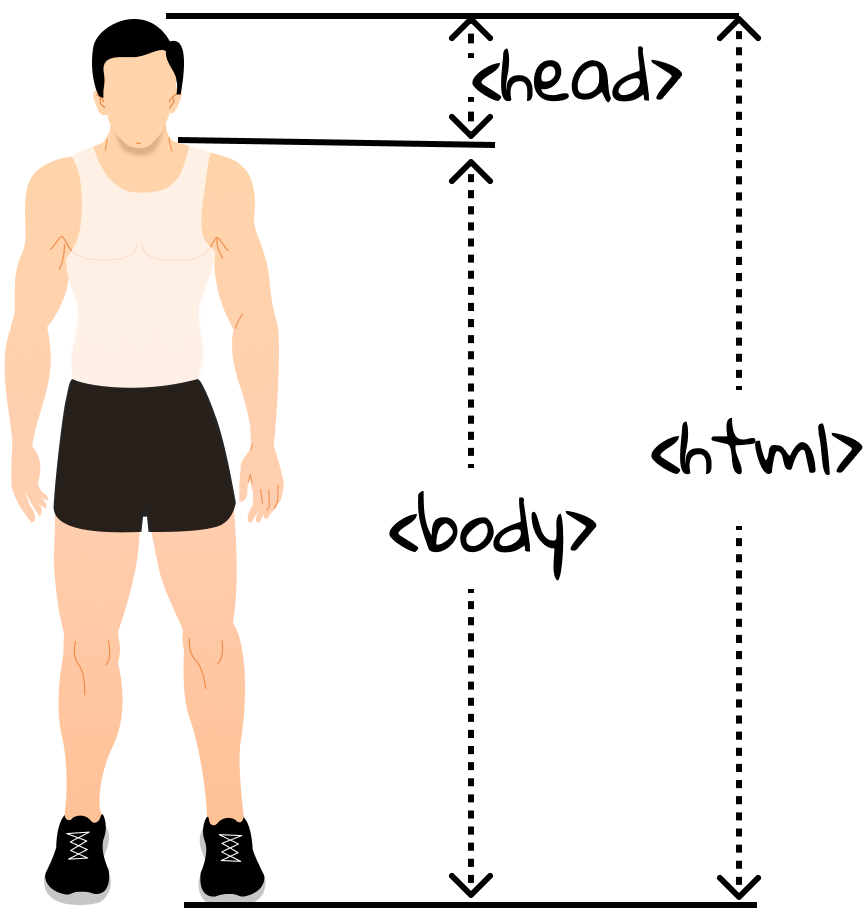

1.3 A Brief Introduction To HTML
When you are surfing on the Internet, and seeing all sorts of web pages from different websites, including the one we built in Section 1.2, a natural question is: how is an web page displayed? Well, to answer this question, let's run the previous web application again. Once the Hello World web page is opened in the web browser, right-click to display the pop-up menu, and then select Show Page Source (in Safari) or View Page Source (in Edge, Firefox and Chrome). The following is what you will see:
<!DOCTYPE html>
<html>
<head>
<title>JSP - Hello World</title>
</head>
<body>
<h1>Hello World!
</h1>
<br/>
<a href="hello-servlet">Hello Servlet</a>
</body>
</html>
These lines of code are written in HTML, the standard markup language for web pages, short for HyperText Markup Language. HTML is probably the least complex and most worth-learning web skill, and five minutes are enough for you to become an experienced HTML developer. We are not kidding: FIVE minutes.
Here what you will need[1]:
- A text editor. Here, we highly recommend Visual Studio Code.
- A modern web browser (e.g., Edge, Chrome, Firefox and Safari) to view HTML pages.
Get started with HTML
[!TIP] TL;DR HTML consists of a series of elements, controlling how contents on web pages appear or act. Elements can be nested, and elements can also have attributes.
HTML (Hypertext Markup Language) is not a programming language. It is a markup language that tells web browsers how to structure the web pages you visit. HTML consists of a series of elements, which you use to enclose, wrap, or mark up different parts of content to make it appear or act in a certain way. The process of the web browser interpreting HTML code for a display is rendering.
For example, consider the following line of text:
My cat is very grumpy.
If we wanted the text to stand by itself, we could specify that it is a paragraph by enclosing it in a paragraph (<p>) element:
<p>My cat is very grumpy</p>
[!NOTE] Tags in HTML are not case-sensitive. However, it is best practice to write all tags in lowercase for consistency and readability.
In this example, we can notice that our element includes opening tag, and content, and closing tag, as illustrated in Figure 1.9.

Elements can be placed within other elements. This is called nesting. Notice that the tags have to open and close in a way that they are inside or outside one another. For example,
<!-- Correct nesting -->
<p>My cat is <strong>very</strong> grumpy.</p>
<!-- Wrong nesting -->
<p>My cat is <strong>very grumpy.</p></strong>
is a correct and wrong way of nesting, respectively, where
-
<!-- -->is the comment sign in HTML, just like//in Java. -
<strong>is to wrap the word and make it look strong(er) in text formatting.[!NOTE] Some elements consist of a single tag, without content and classing tag. For example
<img src="cat.png">alone can embed an image filecat.pngonto a page, and you don't have to write<img src="cat.png"></image>.
In the note above, we can find that elements can also have attributes. An attribute should have an attribute name, followed by an equal sign, and an attribute value, wrapped with opening and closing quote marks. So, src is the attribute name to donate the image source. In Figure 1.10, the <p> element has an attribute name class with value editor-note.

Basically, you have learnt all grammar knowledge of HTML[2], and what you need to enhance is to grasp more elements as well as their attributes. If you encounter some unfamiliar elements or attributes, please refer to many great resources available for learning HTML, such as HTML Tutorial by W3School.
Anatomy of a complete example
Let's revisit the HTML code in the beginning of this section. Copy the code into a document and save it as test.html. Double click test.html, and then your default web browser will open it.
[!NOTE] The file suffix of HTML can be either
.htmor.html. But it is a good practice to use the latter one.
- The
<!DOCTYPE html>declaration defines that this document is an HTML5[3] document. - The
<html>element is the root element of an HTML page. - The
<head>element contains meta information about the HTML page. - The
<title>element specifies a title for the HTML page (which is shown in the browser's title bar or in the page's tab). - The
<body>element defines the document's body, and is a container for all the visible contents, such as headings, paragraphs, images, hyperlinks, tables, lists, etc. - The
<h1>element defines a large heading. - The
<br>element inserts a single line break. - The
<a>element defines a hyperlink.
As a minimal web page, you should at least include <html> and <body>.

You can click on <a> and jump to another document. The most important attribute of <a> is the href attribute, which indicates the link's destination. Try to append <a href="https://wwww.bing.com">Bing</a> before </body> tag, and the refresh index.html in the web browser. A new link Bing colored in blue appears, right? And see what happens when you click it. Congratulations! You are already an HTML guru now.
[1] This section is adapted from Structuring the web with HTML by Mozilla.
[2] To write workable (practical) web pages, you need also to understand more advanced topics like CSS and JavaScript.
[3] The current version of HTML is HTML5.